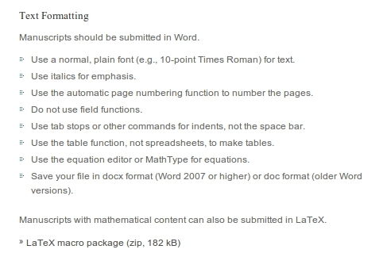

- O que faz um estudante/cientista/professor?
- Atividade comum: estudar, ler, produzir conteúdo, publicar
- Gerenciamento de uma grande quantidade de informações e conhecimento
Gerenciamento de Referências Bibliográficas
Use seu tempo de forma eficiente!
Antonio Augusto Franco Garcia
Departamento de Genética, ESALQ/USP
Introdução
Gerenciamento de Referências
- Objetivo: eficiência e produtividade
- Usar os modernos recursos computacionais
- Foco no conteúdo, não nos formatos e regras
Informação
- Livros
- Artigos
- Internet
- Vídeos
- Palestras
Cada vez é mais comum armazenarmos informação digital
Formatos
- Pastas suspensas com separatas
- Arquivos de diferentes tipos
Padrão atual
- Arquivos (em formato pdf para artigos)
- ebooks
- Livros impressos
- Arquivos .mp4
- Lista de favoritos no Youtube
Anotações
- "Marca-texto"
- Anotações
- Notas de rodapé
- Cadernos
- "Guardanapos"
- \(\ldots\)
Informação
- Onde guardei?
- Como lembrar?
- Estamos em 2014!
Reprodutibilidade!
Bagunça vs Reprodutibilidade
- Você arruma sua casa antes de receber visitas?
- Você gostaria que alguém repetisse as análises que você fez na sua tese?
- E nos artigos já publicados?
- (Fiz isso no meu pós-doc)
Docentes/Responsabilidade
- Referências Bibliográficas: um ótimo primeiro passo
- Lembre-se, temos o dever ético de citar corretamente o trabalho de outros autores
- Há outros pontos:
- Somos funcionários públicos: a sociedade não espera que usemos nosso tempo corrigindo se todos os artigos estão citados no texto, e vice-versa! (É fácil pensar em vários outros exemplos)
- Uso eficiente do tempo é bom para todos
- Novas normas para Teses e Dissertações
Tenho algo a dizer?
- Docente
- Editor de periódicos
- Genética Estatística
- Softwares
- Colaborações
- Dados de diferente natureza
- Alunos
- \(\LaTeX\)
- Páginas pessoais: about.me, página pessoal, Lab
Reprodutibilidade
- Os arquivos estão seguros?
- Vou conseguir abri-los daqui 10 anos?
- Consigo ter acesso as informações de forma eficiente?
- Metadados?
- Vários critérios de buscas?
- Pastas suspensas: classificação unidimensional
Programas
- Uôrdi, Equicél, Pouerpóinti
- SAS
- \(\ldots\)
- Licenças institucionais (USP)
- Pirataria
Não seja ingênuo!
- iOS vs Android
- Windows Phone (Microsoft)
- Tizen (Samsung)
- Kindle (Amazon)
Portabilidade
- Arquivos texto são os melhores!
- Arquivos texto vs binários
- Excel vs .csv
- Linux
- git
Retrógrado? Desatualizado?
- É óbvio que precisamos de interfaces para interagir com os arquivos
- Base de dados é diferente de trabalhar com os arquivos
- (Sim, o Excel abre e grava arquivos em .csv)
- pdf é formato binário, mas é possível facilmente convertê-lo em texto
- O CV Lattes não permite isso, já que não podemos baixar a base de dados, apenas binários
Referências Bibliográficas
- Grande parte do seu tempo (tomara!) será dispendido lendo/escrevendo publicações
- Será preciso constantemente retornar as anotações e fazer diferentes buscas
- Logo, qualquer investimento de tempo tem elevado retorno na produtividade
- O novo formato de Teses e Dissertações prevê o uso de algum gerenciador de referências (mas não obriga tal uso)
Demonstração
- Emacs + R + BibTex
- Código fonte destes slides
BibTex
- BibTex
- Formato texto, portátil, versátil, lingua franca
- Associado ao \(\LaTeX\), mas não necessariamente
Formato
@misc{ patashnik-bibtexing,
author = "Oren Patashnik",
title = "BIBTEXing",
year = "1988" }
Exemplos
- library.bib
Formato Atual
- "Windows-cêntrico"
- Normas que devem ser implementadas no computador
- Nem sempre isso é possível, exigindo muitas intervenções
- Rígido, não adaptado aos diferentes cenários
Exemplos (cm? No computador?)


Citações
- Basicamente, formato da ABNT
- Cidade da revista
- Identificação de contexto (intervenção humana!): número de autores, parênteses ou não, etc
- \(\ldots\)
Times New Roman
- A Times New Roman é uma família tipográfica serifada criada em 1931
- Jornal inglês The Times of London
- Uma versão da Times New Roman foi produzida pela Monotype para a Microsoft
- Distribuída em todas as cópias do Microsoft Windows desde a versão 3.1.
- A Microsoft procura substituir a Times New Roman com uma nova fonte
sem serifa, a Calibri
- (Fonte: Wikipedia)
Qual é o problema?
- Assume-se (e, num certo sentido, recomenda-se) o uso do MS Word (MS Office)
- Mundo contemporâneo:
- Windows
- Mac
- Linux
- \(\ldots\)
Preciosismo? Excentricidade?
- Computação em nuvem (Google Docs, ...)
- LibreOffice
- LaTeX
- (html5, \(\ldots\))
Exemplos
Theoretical and Applied Genetics

Fórmulas

LaTeX (e outros formatos)
- Muitas revistas e livros usam o formato
- Biometrics, Genetics, PLOS ONE, \(\ldots\)
- Há na ESALQ um "Guia de Sobrevivência para Usuários do LaTeX"
Proposta
Apresentar um "template" real e efetivo (não um documento modelo)
- Redação de Dissertações e Teses usando diferentes programas e sistemas operacionais, de acordo com as necessidades do usuário
- Não elimina ou privilegia algum programa
- Porém, obviamente, leva em consideração que a maioria dos usuários usa o MS Word
- Permite tanto formatação automática quanto manual
- Usuários podem optar por não usá-lo!
- Pode ser atualizado constantemente, levando em conta sugestões dos usuários (em última análise, quem procuramos atender)
- Elaboração de Tutoriais
Mudanças
- O computador faz o serviço para nós (e não o contrário)
- Ao delegar, precisamos ter certa flexibilidade com os resultados que
esperamos receber
- Exemplos: margens exatas, letras com tamanho exato, "kerning", etc
- Faz diferença usar Figura 1., Figura 1., Figura 1 -, Figura 1:, etc?
- O "índice" precisa ter medidas precisas, ou basta mostrar onde estão as informações que procuramos?
- Todas as teses precisam ter a mesma fonte? (E para as equações, a fonte usada deve estar na norma? Isso vale para letras gregas também?)
- Vantagem: foco no que é importante (conteúdo), aumento de produtividade
- Na prática, as diferenças são mínimas e imperceptíveis a olho nu (ex: 7,5 cm ou 7,7 cm)
Muitas Possibilidades
- Converter relatórios em teses (quanto ao formato)
- Converter artigo em tese, e vice-versa
- Conversão entre os formatos das diferentes revistas de forma simples
- \(\ldots\)
O que é necessário?
Situação Ideal:
- Base de dados com referências bibliográficas
- Entendimento sobre o uso dos templates
Para o primeiro item: organização dos alunos durante todo o curso
- Porém, caso isso não seja adotado, o sistema atual (digitação e conferência de todas as referências) ainda é possível
Segundo item: Tutoriais, motivação do orientador, divulgação
- Podem obviamente incorporar também o item 1
Formatos para citação adotados pelas principais revistas
- Citation Styles, CSL, http://citationstyles.org
- Mais de 6700 estilos de citação abertos e gratuitos
- As principais revistas participam e contribuem
- Tais formatos podem ser importados em vários programas gerenciadores de referências
Gerenciadores de Referências
Demonstração
Template + Word + Mendeley
- Formatação: de artigo para tese
- Inserir referências
- Mudar o formato das citações
OBRIGADO!